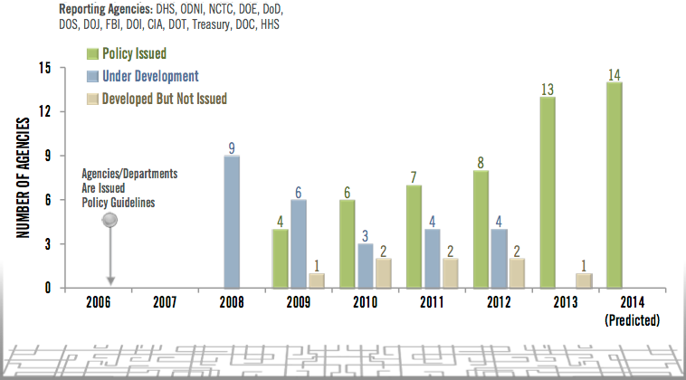

Information Sharing Environment
2013 Annual Report to the Congress
NATIONAL SECURITY THROUGH RESPONSIBLE INFORMATION SHARING
NATIONAL SECURITY THROUGH RESPONSIBLE INFORMATION SHARING
This section addresses ISE initiatives that are focused on ensuring the protection of privacy, civil rights, and civil liberties (P/CR/CL) through the consistent government-wide application of protections.
The following list of findings highlights accomplishments and opportunities for improvement. Further detail is provided in the pages that follow.
The Information Sharing and Access Interagency Policy Committee (ISA IPC) P/CL Subcommittee is developing guidelines for information sharing and safeguarding agreements that will both ensure that mission needs are met and that P/CR/CL are protected;
DOC, HHS, Treasury, and DOE finalized their privacy policies;
DoD is near completion of its updated Privacy Directive;
DHS established a formal process for conducting compliance reviews for the implementation of privacy protections within and across the Department's information sharing programs;
Treasury conducted a pilot of the compliance review self-assessment checklist drafted by the P/CL Subcommittee's Compliance Review Working Group to determine if the effectiveness of this tool as a review and audit mechanism for agency compliance is within ISE privacy policies;
DOI is developing a computer-based course entitled "Privacy for the Information Sharing Environment" that will provide guidance on compliance requirements for P/CR/CL protections;
DHS hosted a National Fusion Center P/CL Officer Workshop, in coordination with the NSI PMO, and the DOJ Bureau of Justice Assistance; and
The PM-ISE hosted its fourth roundtable outreach event with the advocacy community in order to build stronger P/CR/CL protections in operational programs, training, and guidance materials.
While there have been initiatives to measure and ensure privacy compliance, there currently is not an effective ISE-wide performance measurement for internal agency compliance, oversight, and accountability mechanisms to ensure consistent application of P/CR/CL protections. The development of these measures is a priority for the ISA IPC P/CL Subcommittee.
Several priority objectives identified in the National Strategy have P/CR/CL implications, and their implementation will provide for a more uniform application of P/CR/CL protections across the ISE by helping mission partners reach a common understanding of such safeguards.
Over the last year, the Privacy and Civil Liberties (P/CL) Subcommittee and its Privacy and IT Working Group (PITWG) have been developing guidelines for information sharing and safeguarding agreements that will both ensure that mission needs are met, and ensure the protection of personally identifiable information and P/CR/CL. A common process for framing these agreements adds value by promoting a mutual understanding of appropriate protections among information sharing partners, and by sharpening the partners' focus on legal and policy requirements, data uses, and identification of mission purposes for the acquisition of information. This is particularly important when partners have vastly different authorities and mission requirements.
With input from the Data Aggregation Working Group, PITWG has taken these principles into consideration in its on draft policy guidance to address key P/CR/CL requirements for information sharing and safeguarding agreements and identifying ways to streamline the development process. The policy guidance is projected to be disseminated to ISE stakeholders in 2013 and subsequently supplemented by a checklist, which may include sample language.
The ISA IPC works with the office of the PM-ISE and serves as a key governance body for carrying out the strategic vision and priority objectives set forth in the National Strategy. It brings federal partners together to develop strategic, cross-cutting approaches to addressing information sharing and safeguarding requirements. The ISA IPC P/CL Subcommittee is comprised of senior privacy and civil liberties representatives from ISE federal mission partners as identified in EO 13358, or as designated by the Director of National Intelligence. The Subcommittee is steered by an Executive Committee of senior P/CL officers from the ODNI, DHS, and DOJ, and is chaired by the ODNI Civil Liberties Protection Officer.
Since its re-constitution in September 2010, the P/CL Subcommittee has advised the ISA IPC on the best means for strengthening the protection of P/CR/CL within information sharing and safeguarding activities by federal agencies, SLTT government agencies, and private-sector partners. Over the past year, P/CL Subcommittee members have focused on supporting initiatives and developing tools to help mission partners consistently apply P/CR/CL requirements, including technical assistance to support the development of ISE privacy policies, the development of draft guidance to streamline the process for developing information sharing agreements, and the development and piloting of a compliance review self-assessment template.
|
Established by the Implementing Recommendations of the 9/11 Commission Act of 2007, the Privacy and Civil Liberties Oversight Board (PCLOB) became operational as an independent oversight agency within the executive branch during the 2012-2013 reporting period. The Board has a full-time chairman and four part-time board members. All are nominated by the President and confirmed by the Senate. The PCLOB has both a consultative and an oversight role regarding P/CR/CL in the Federal Government's development and use of the ISE. The PCLOB has two primary purposes: 1) to analyze and review actions the executive branch takes to protect the U.S. from terrorism, ensuring that the need for such actions is balanced with the need to protect privacy and civil liberties; and 2) to ensure that liberty concerns are appropriately considered in the development and implementation of laws, regulations, and policies related to efforts to protect the Nation against terrorism. |
A significant area of focus and P/CL Subcommittee attention has been in the development and adoption of written P/CR/CL policies, as required by the ISE Privacy Guidelines. In last year's Annual Report, PM-ISE reported that federal partners continued to make slow but steady progress toward the completion of these P/CR/CL policies, with 79% of federal ISE departments and agencies having completed-policies in place.[53] As of July 2013, the completion rate is 93%, due to DOC, HHS, Treasury, and DOE having finalized their policies. DoD is currently revising its directive, DoDD 5400.11, to commit to following the ISE Privacy Guidelines in lieu of issuing a stand-alone ISE privacy policy.

Figure 4. Federal ISE Privacy Policy Status.
State, local, tribal and territorial partners continue to demonstrate their commitment to protecting P/CR/CL by prioritizing the development and implementation of privacy policies that are at least as comprehensive as the ISE Privacy Guidelines. In addition, all 78 fusion centers have an approved privacy policy that is at least as comprehensive as the ISE Privacy Guidelines.
During the past year, ISE agencies reported using one or more of the following mechanisms for ensuring compliance with statutory and regulatory authorities, ISE Privacy Guidelines requirements, agency legal guidance, protocols, and policies:
Reviewing information sharing and safeguarding agreements and other mechanisms to ensure that the activities comply with legal and agency policy requirements;
Conducting programmatic reviews of law enforcement programs;
Auditing intelligence systems;
Reviewing intelligence reporting that is to be shared within the ISE, before that information is disseminated to ISE partners; and
Periodic Office of Inspector General reviews of privacy and security practices.
In addition, DHS established a formal process to conduct compliance reviews for the implementation of privacy protections within and across the Department's information sharing programs. Over the last year, the DHS Privacy Office conducted and completed a review of DHS's participation in the Nationwide Suspicious Activity Reporting Initiative (NSI) and is currently updating its internal processes to comply with recommendations resulting from this review.
Also of note, the Department of the Treasury conducted a pilot of the compliance review self-assessment checklist that had been drafted by the P/CL Subcommittee's Compliance Review Working Group in 2012. The objective of the pilot was to determine the effectiveness of this tool as a review and audit mechanism for agency compliance with their respective ISE privacy policies. Pursuant to the ISE Privacy Guidelines, federal agencies are required to have an adequate review and audit mechanism in place to verify compliance with the Guidelines. The results and recommendations from the pilot will be evaluated by the P/CL Subcommittee and used to enhance the efficacy of the checklist.
As emphasized in previous annual reports, P/CL officials from federal ISE agencies must be actively involved with information sharing and safeguarding activities for their respective agencies. P/CL officials are charged with directly overseeing the implementation of, and compliance with, the ISE Privacy Guidelines and P/CR/CL policies and procedures within their agencies.
ISE mission partners are actively working to ensure that legal and policy P/CR/CL requirements are appropriately and consistently integrated into programmatic activities. Full integration of P/CR/CL protections not only facilitate compliance with legal and policy requirements, but also ensure that mission needs are met.
The responses to this year's performance assessment questionnaire indicate an increase in the involvement in ISE activities by P/CL officials, although the level of participation in ISE activities appears to be uneven across the agencies. Future progress can best be achieved by having P/CL officers work closely with operational stakeholders in the planning, development, and oversight of information sharing and safeguarding efforts, and by establishing a common understanding between and among mission partners on the need for and scope of these protections.
In light of the National Strategy emphasis on streamlining the development process for information sharing agreements, P/CL officials are a critical resource for ISE agencies. P/CL officials must be involved early in the development process to ensure that mission-appropriate P/CR/CL protections are built into the agreements, and must be able to appropriately participate in reviews of compliance with the terms and conditions of information sharing agreements, including compliance with ISE requirements. For these reasons, ISE mission partners should assess whether their P/CL officials have the appropriate authority and resources needed to provide appropriate oversight over P/CR/CL issues that arise out of their agencies' participation in the ISE.
Training and outreach are essential parts of P/CR/CL protections. Commitment to P/CR/CL safeguards builds trust with partners and the community, reinforces information sharing activities, and necessarily involves training personnel who are authorized to share protected information in the ISE. The National Strategy includes as a priority the need to provide training for information sharing, safeguarding, and handling to promote consistent, trusted processes. This training must address P/CR/CL legal and policy requirements, and must include role-based training where appropriate.
At the federal level, mission partners have emphasized the importance of training ISE personnel on P/CR/CL protections, although the responses to the annual ISE Performance Assessment Questionnaire reveal that the types of training and the substantive depth of the modules differ from agency to agency. The types of training that were identified in the responses include privacy awareness and annual refresher training; ISE Core Awareness training available at ise.gov; training on the agency's ISE privacy policy, including data handling, disclosure, redress, etc.; additional or specialized training developed by an agency or component privacy officer; specialized training on EO 12333, U.S. Intelligence Activities, and the application of dataset-specific requirements, including P/CR/CL protections; training that focuses specifically on civil liberties protections; and training on the sharing of protected information in the NSI.
During this reporting cycle, the Department of the Interior (DOI) stands out for its efforts in developing a computer-based course entitled "Privacy for the Information Sharing Environment" that will provide guidance to all DOI law enforcement officials, as well as employees and contractors with ISE responsibilities, on compliance requirements for P/CR/CL protections. The module is expected to be completed in FY 2013.
At the state and local level, training through various workshops and other presentations has helped to prevent the potential loss of institutional and subject matter knowledge resulting from the turnover in staff, liaison officers, and other fusion center personnel.
In November 2012 the DHS Office for Civil Rights and Civil Liberties and the DHS Office of Intelligence and Analysis hosted a National Fusion Center Privacy, Civil Rights, and Civil Liberties (P/CR/CL) Officer Workshop, in coordination with the NSI PMO and the DOJ Bureau of Justice Assistance. Out of 78 fusion center P/CR/CL Officers, 68, or roughly 87%, were present to hear about the latest P/CL protection best practices and lessons learned. They were given a "toolkit" with more than 15 P/CL training modules and exercises for conducting further training at their centers.
Fusion centers develop, implement, and enforce P/CR/CL safeguards to protect constitutional and other legal rights, and to ensure that they are addressing their legal and policy obligations while engaged in the fusion center process. Their commitment to these safeguards also builds trust with partners and the community, which in turn fosters increased information sharing, which is vital to executing the fusion process.
The NSI has also continued to implement a comprehensive and multi-tiered approach to analyst/investigator training. This training, as with all NSI role-based training modules, emphasizes the importance of P/CR/CL protections in the process of identifying and documenting suspicious activity. The curriculum stresses, among other things, that reporting of suspicious activity must be based on one or more of the sixteen observed preoperational behaviors, and not be based solely on personal attributes such as race or ethnicity, or the individual's exercise of his or her civil liberties, which are protected by the Constitution.
Outreach between ISE mission partners and with the advocacy community promotes transparency of ISE initiatives, and fosters an opportunity to assess public concerns and perceptions. Many federal and SLTT mission partners have established strong relationships with the advocacy community as part of their office or agency outreach program. Over the past eight years, PM-ISE's engagement with the advocacy community on ISE matters has resulted in stronger P/CR/CL protections in operational programs, training, and guidance materials. In May 2013, PM-ISE hosted its fourth roundtable outreach event with the advocacy community, in collaboration with federal, state, and local mission partners.
The ISA IPC Privacy and Civil Liberties (P/CL) Subcommittee has developed a series of next steps:
Develop and implement effective and comprehensive compliance, oversight, and accountability mechanisms for ensuring consistent application of mission-appropriate P/CR/CL protections by ISE mission partners.
Define and implement a common process and template for the development of information sharing agreements, to streamline the process and promote best practices.
Promote a common understanding of P/CR/CL protections across information exchanges of datasets, and other mission information through information sharing agreements.
Develop and implement ISE P/CR/CL training that can be leveraged by ISE mission partners.
Ensure a process for periodic outreach to the privacy, civil rights, and civil liberties advocacy community, to promote awareness and dialogue concerning developments across the ISE.